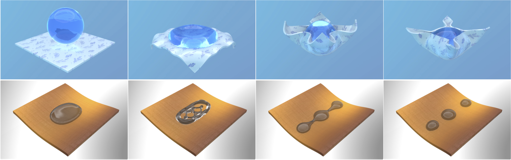

We propose a novel solid-fluid coupling method to capture the subtle hydrophobic and hydrophilic interactions between liquid, solid, and air at their multi-phase junctions. The key component of our approach is a Lagrangian model that tackles the coupling, evolution, and equilibrium of dynamic contact lines evolving on the interface between surface-tension fluid and deformable objects. This contact-line model captures an ensemble of small-scale geometric and physical processes, including dynamic waterfront tracking, local momentum transfer and force balance, and interfacial tension calculation. On top of this contact-line model, we further developed a mesh-based level set method to evolve the three-phase T-junction on a deformable solid surface. Our dynamic contact-line model, in conjunction with its monolithic coupling system, unifies the simulation of various hydrophobic and hydrophilic solid-fluid-interaction phenomena and enables a broad range of challenging small-scale elastocapillary phenomena that were previously difficult or impractical to solve, such as the elastocapillary origami and self-assembly, dynamic contact angles of drops, capillary adhesion, as well as wetting and splashing on vibrating surfaces.

We gratefully acknowledge NSF-1919647, 2106733, 2144806, and 2153560 or funding support. We credit the Houdini education license for producing the video animations.
{ auth }